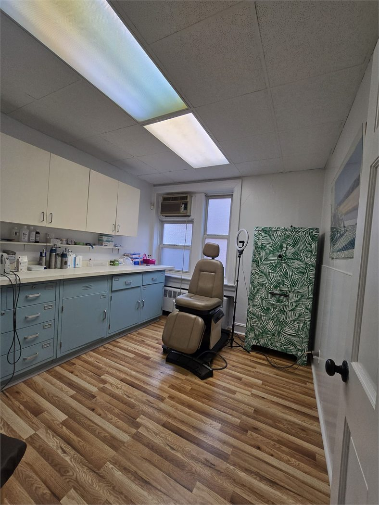

★★★★★
Strong patient-confidence signals across review touchpoints
Patients looking for a dermatologist in Astoria usually want confidence that the doctor is experienced, attentive, and easy to understand.
Reviews & Reputation
A strong review page should feel believable at a glance. Patients usually compare communication, professionalism, exam quality, and whether the visit feels calm and well-organized from start to finish.
This page summarizes patient priorities and practice highlights. For verified third-party reviews, use the Google Maps profile and established healthcare directories.

Trust Snapshot
What makes reviews feel real is not just stars. It is the combination of strong bedside manner, attentive exams, clear treatment guidance, and a visit that feels respectful instead of rushed.
Patients looking for a dermatologist in Astoria usually want confidence that the doctor is experienced, attentive, and easy to understand.
Platform Presence
Most people do not read every line. They compare the source name, star impression, and the short theme that tells them what kind of experience other patients usually talk about.
Review Highlights
The strongest review language is usually simple: patients want to feel respected, well-informed, and confident that their dermatologist paid close attention.
"The office felt elevated and professional, and Dr. Gladstein made a complicated skin issue easy to understand. I never felt rushed."
Review-style patient feedback"My appointment was efficient, but still personal. The treatment plan was practical, clear, and very reassuring."
Review-style patient feedback"I appreciated the careful exam and the way every recommendation was explained. It felt like genuine, high-level medical care."
Review-style patient feedback